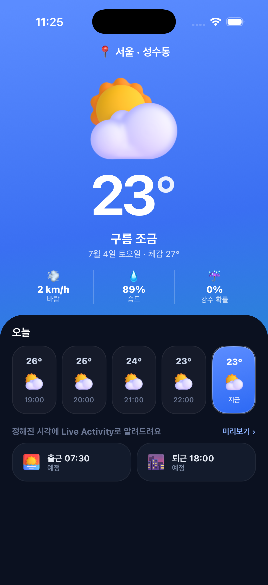
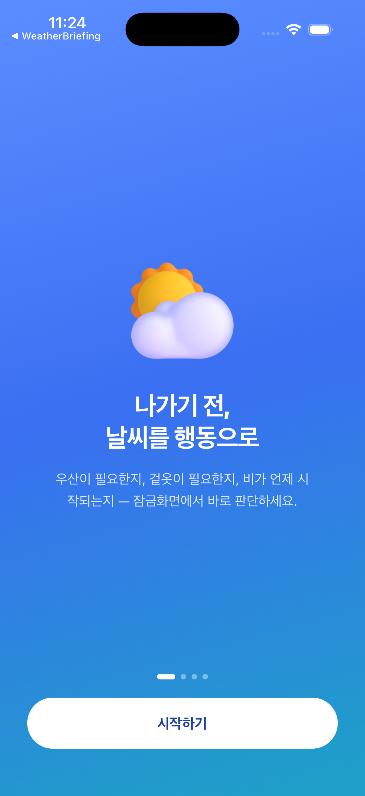

나가기 전에 오늘을 챙기세요. 잠금화면 Live Activity가 '우산 챙기세요' 같은 행동 문구로 딱 필요한 것만 알려줍니다. 곧 출시 예정입니다.


출근·퇴근·외출 시간대와 요일을 정해두면, 그 시간에만 자동으로 브리핑이 시작돼요. 필요할 때만 조용히.
기온·강수확률 숫자를 해석할 필요 없이 '우산 챙기세요' 같은 행동 문구를 잠금화면 Live Activity와 다이나믹 아일랜드에 띄워요.
담백하게·친근하게·강하게 — 나에게 맞는 톤으로 브리핑을 받으세요.
회원가입 없이, 설정과 지역은 기기 안에만. 날씨는 공개 기상 데이터로 조회해요.